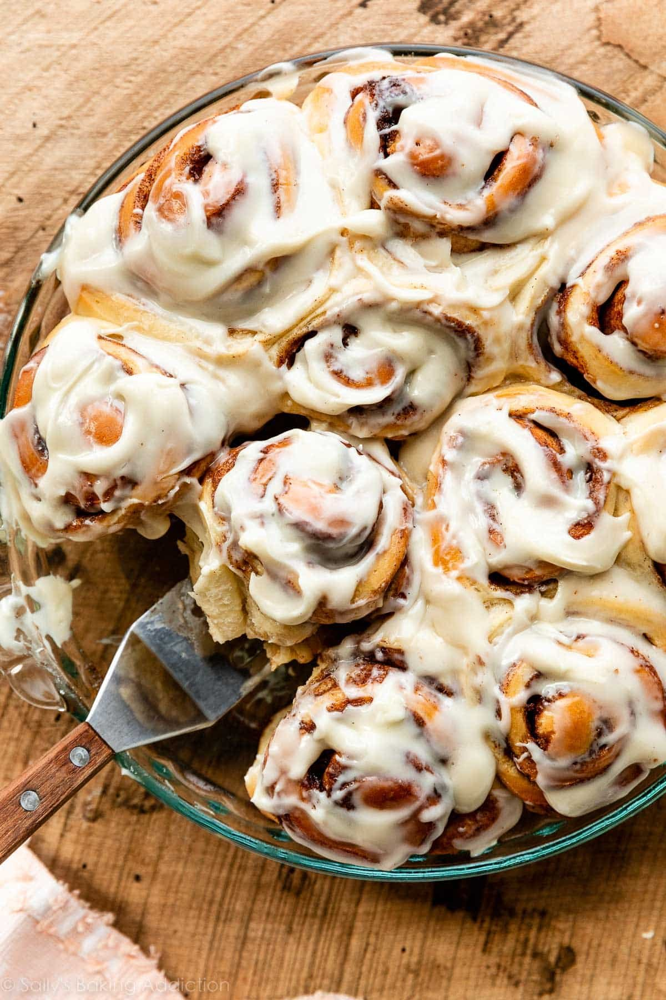

Cinammon Buns

Description
These are classic, homestyle cinnamon rolls.
It took me lots of recipe testing trial-and-error to develop quick
cinnamon rolls that maintain all the flavor and texture of traditional
overnight cinnamon rolls. But THIS. IS. IT.
And I promise, making these easy cinnamon rolls is 100x more satisfying
than that feeling you get from popping open a store-bought
can of ready-to-bake rolls.
Ingridients
- Flour: flour provides the dough structure. All-purpose flour is best for these cinnamon rolls.
You could also use bread flour the rolls will be chewier
- Sugar: You need white granulated sugar in the dough, both for flavor and to feed the yeast.
- Salt:Flavor
- Whole milk: hole milk is ideal for the richest-tasting cinnamon rolls. Buttermilk works
just as well without any changes to the recipe. Many readers have successfully substituted nondairy milks.
In a pinch, you can use low-fat milk, but avoid using nonfat milk.
- Butter This is a rich dough, meaning it has fat to help guarantee softness.
- Egg: Like butter, egg promises a softer, richer dough.
- Step 1:
- Step 2:
- Step 3: